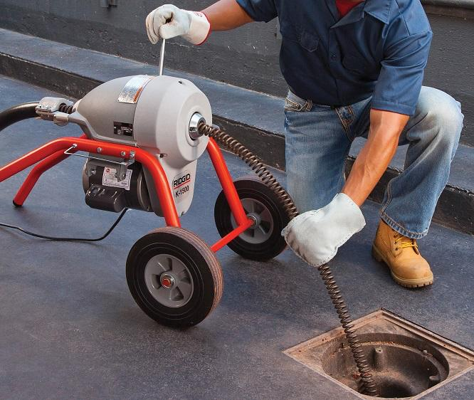
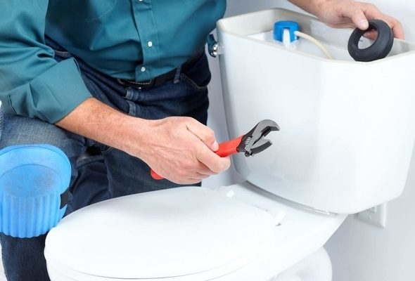

En Gasfitería Integral Copiapó somos un equipo comprometido con brindar soluciones rápidas, seguras y de calidad en todo tipo de trabajos de gasfitería. Nos especializamos en reparaciones, instalaciones y mantenciones, atendiendo tanto hogares como negocios en la zona. Nos diferenciamos por nuestra responsabilidad, puntualidad y atención cercana, entendiendo que cada problema requiere una solución eficiente y duradera. Más que un servicio, buscamos entregar confianza y tranquilidad a cada cliente.
Si necesitas un trabajo bien hecho y sin complicaciones, puedes contar con nosotros.

Descripción: Instalamos y reemplazamos calefones de forma segura, asegurando un correcto funcionamiento y suministro continuo de agua caliente.

Descripción: Detectamos y reparamos fugas en cañerías, llaves y conexiones para evitar daños, humedad y pérdida de agua.

Descripción: Realizamos la instalación completa de lavaplatos, incluyendo conexiones de agua y desagüe para un uso eficiente y sin filtraciones.

Descripción: Eliminamos obstrucciones en tuberías, lavaplatos, duchas y alcantarillado, restaurando el flujo normal del agua.

Descripción: Instalamos y reparamos inodoros, solucionando problemas de filtraciones, mal funcionamiento o desgaste de piezas.
Nos destacamos por ofrecer un servicio confiable, eficiente y de calidad, enfocado en satisfacer las necesidades de cada cliente. Estas son nuestras principales fortalezas:
-Rapidez en la atención
-Experiencia y conocimiento técnico
-Trabajo garantizado
-Precios accesibles
-Atención a domicilio
-Variedad de servicios
-Responsabilidad y puntualidad